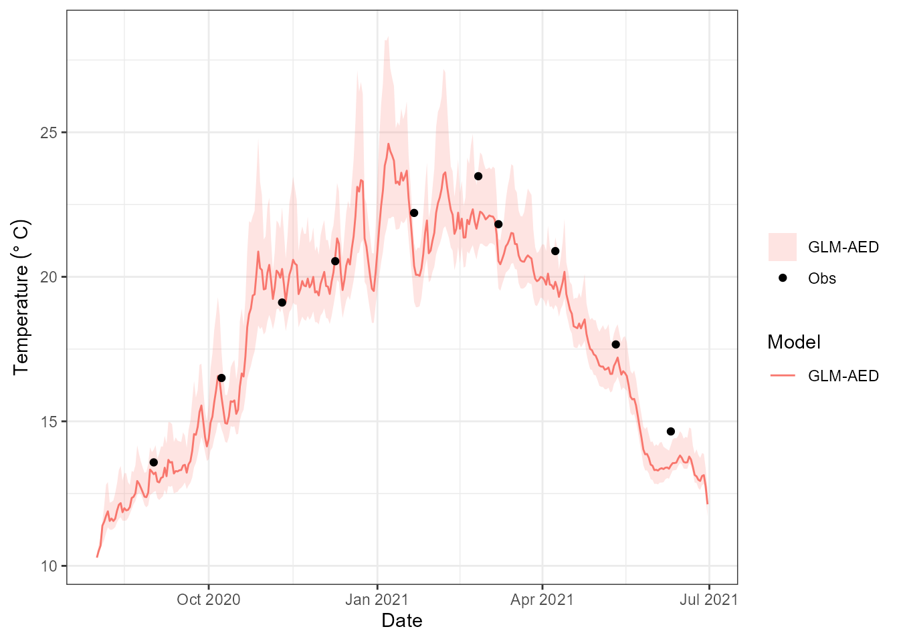
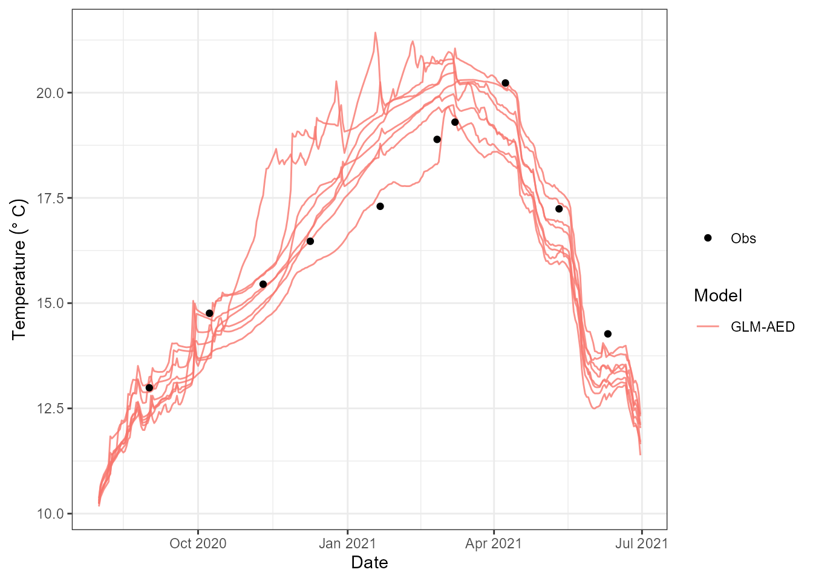
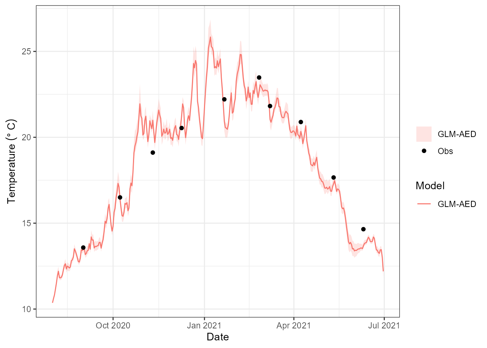
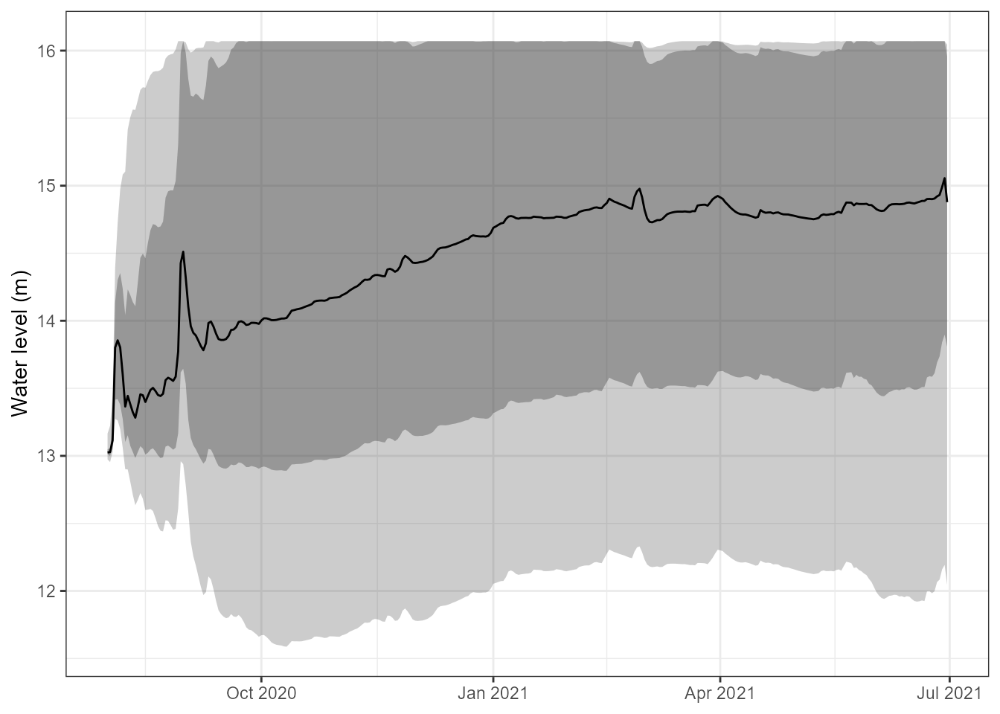
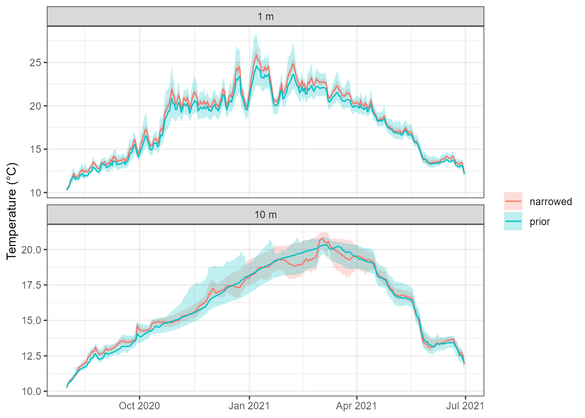

Parameter uncertainty with ensembles
Source:vignettes/articles/parameter-uncertainty.Rmd
parameter-uncertainty.RmdWhy parameter uncertainty matters
A single calibrated run gives one trajectory per variable, and it looks far more certain than it is. Many process parameters – light extinction, mixing coefficients, inflow and outflow scaling, the biogeochemical rate constants – are only loosely constrained by the data we have. Several quite different parameter vectors can reproduce the observed temperature profile equally well and then diverge when asked about oxygen, or about a season that was not observed.
Running the model over an ensemble of parameter sets
makes that visible. The spread across members is a direct, model-based
estimate of how much of the prediction is controlled by what we do not
know about the parameters. It is one axis of uncertainty alongside the
initial state (see
vignette("initial-conditions-and-spin-up")) and the
forcing.
This article covers three things:
-
running an ensemble with
run_aeme_ensemble(), here with parameter sets sampled from each parameter’s[min, max]range; - supplying calibrated sets – in particular the posterior from a PEST++ iterative ensemble smoother calibration;
- writing the output to Parquet, so a large ensemble can be stored compactly, queried without loading it all, and compared with other ensembles later.
We use the example lake shipped with the package, simulated with GLM-AED. Copy its configuration somewhere writable, load it, and build the model once:
tmpdir <- tempdir()
path <- file.path(tmpdir, "lake")
aeme_file <- system.file("extdata/aeme.rds", package = "AEME")
aeme <- readRDS(aeme_file)The parameter table
An ensemble needs something to vary. AEME describes calibratable
parameters in a long data.frame with one row per parameter: the
model and file it lives in, its
name, a current value, and the
min and max that bound it. The package ships a
ready-made table:
data("aeme_parameters", package = "AEME")
param <- aeme_parameters[aeme_parameters$model == "glm_aed", ]
as.data.frame(param[, c("file", "name", "value", "min", "max")])
#> file name value min max
#> 1 glm3.nml light/Kw 0.58 0.1 5.52
#> 2 glm3.nml mixing/coef_mix_conv 0.14 0.1 0.20
#> 3 glm3.nml mixing/coef_mix_hyp 0.74 0.4 0.80
#> 4 glm3.nml mixing/coef_mix_shear 0.14 0.1 0.20
#> 5 glm3.nml mixing/coef_mix_turb 0.56 0.2 0.70
#> 6 glm3.nml mixing/coef_wind_stir 0.21 0.2 0.30
#> 7 inf inflow 1.00 0.5 2.50
#> 8 met MET_radswd 1.00 0.7 1.30
#> 9 met MET_wndspd 1.00 0.7 1.30
#> 10 wdr outflow 1.00 0.5 2.50The example lake has no parameters attached, so we attach the table
to the aeme object with add_param(). The
min/max columns are the sampling space, so
this is the place to encode what you believe about each parameter. The
shipped Kw range (light extinction) runs from 0.1 to 5.5
m-1, which spans everything from clear alpine water to a
bloom; for this lake we narrow it:
param$max[param$name == "light/Kw"] <- 1.5
aeme <- add_param(aeme, param)Then build the GLM-AED configuration:
aeme <- build_aeme(aeme, model = "glm_aed", path = path, ext_elev = 3)A sampled ensemble
run_aeme_ensemble() runs a model once per
parameter set you give it. For each member it writes
the parameters into the model configuration with
input_model_parameters() and then calls
run_aeme(), and it stores every member’s output on the
returned object under output(aeme)$ens_001 ... ens_00k. A
member that fails is dropped, with a warning, and the rest are
renumbered.
param_sets is either
- a list of parameter data.frames, one per member,
each with the
valuecolumn set; or - a single long data.frame with an
ensembleid column plus the usual parameter columns.
Each data.frame has the same columns as
parameters(aeme); only model,
file, name and value are
required.
The simplest ensemble draws each parameter independently and
uniformly between its min and max. That is a
few lines of R, so we write it ourselves:
sample_param_sets <- function(param, n) {
sets <- lapply(seq_len(n), function(i) {
p <- param
p$value <- runif(nrow(p), p$min, p$max)
p
})
setNames(sets, sprintf("m%02d", seq_len(n)))
}
set.seed(42)
param_sets_prior <- sample_param_sets(parameters(aeme), n = 12)
head(param_sets_prior[[1]][, c("name", "value", "min", "max")])
#> name value min max
#> 1 light/Kw 1.3807285 0.1 1.5
#> 2 mixing/coef_mix_conv 0.1937075 0.1 0.2
#> 3 mixing/coef_mix_hyp 0.5144558 0.4 0.8
#> 4 mixing/coef_mix_shear 0.1830448 0.1 0.2
#> 5 mixing/coef_mix_turb 0.5208728 0.2 0.7
#> 6 mixing/coef_wind_stir 0.2519096 0.2 0.3Then run them:
aeme_prior <- run_aeme_ensemble(aeme, model = "glm_aed", path = path,
param_sets = param_sets_prior)
#> Warning: 4 of 12 ensemble members failed or ended early and were dropped.
#> ℹ Dropped: "m03", "m04", "m10", and "m12".
output(aeme_prior)$n_members
#> [1] 8Each parameter is sampled independently, so there is
no correlation structure between parameters, and every member is a
complete model run. Swap in a normal distribution, a Latin hypercube or
anything else by changing how value is filled –
run_aeme_ensemble() only sees the finished sets.
Members are independent, so they parallelise cleanly. Set
parallel = TRUE (and optionally ncore) to run
them on several cores, each worker in its own copy of the model
directory:
param_sets_prior <- sample_param_sets(parameters(aeme), n = 100)
aeme_prior <- run_aeme_ensemble(aeme, model = "glm_aed", path = path,
param_sets = param_sets_prior,
parallel = TRUE, ncore = 4)Members that fail
Some combinations of parameters are simply unphysical for a lake –
for example an outflow scaling that drains the lake faster than the
inflow fills it. GLM does not report that as an error: it exits
normally, the water level goes to zero and below, and the rest of the
output is NA. run_aeme_ensemble() therefore
checks each member’s water level and, by default
(drop_incomplete = TRUE), drops any member whose level
reaches zero or goes NA, as well as any that error or
produce no output. The warning above names the members dropped, and the
survivors are renumbered ens_001, ens_002,
…
Because the sets were named, the labels of the survivors are kept:
kept <- attr(output(aeme_prior), "realisation")
kept
#> [1] "m01" "m02" "m05" "m06" "m07" "m08" "m09" "m11"
setdiff(names(param_sets_prior), kept)
#> [1] "m03" "m04" "m10" "m12"Comparing the dropped members’ parameters with the survivors’ shows what went wrong. Here the inflow and outflow scalings are the usual culprits:
bind_rows(param_sets_prior, .id = "member") |>
filter(name %in% c("inflow", "outflow")) |>
mutate(status = ifelse(member %in% kept, "kept", "dropped")) |>
tidyr::pivot_wider(id_cols = c(member, status), names_from = name,
values_from = value) |>
arrange(status, member)
#> # A tibble: 12 × 4
#> member status inflow outflow
#> <chr> <chr> <dbl> <dbl>
#> 1 m03 dropped 1.28 2.17
#> 2 m04 dropped 0.515 1.72
#> 3 m10 dropped 1.17 1.74
#> 4 m12 dropped 0.503 2.16
#> 5 m01 kept 1.97 1.91
#> 6 m02 kept 2.46 1.62
#> 7 m05 kept 2.28 1.74
#> 8 m06 kept 1.85 1.53
#> 9 m07 kept 1.04 0.981
#> 10 m08 kept 0.516 0.503
#> 11 m09 kept 0.967 1.11
#> 12 m11 kept 1.98 0.505Set drop_incomplete = FALSE to keep every member,
NA-padded after the model stopped, if you want to inspect
them. A tight parameter range, or a supplied ensemble that has already
been through a calibration, is the best way to avoid failures in the
first place.
Summarising and plotting
plot_ensemble() shows the central interval of the
ensemble as a ribbon, with the lake observations overlaid, for one
variable and depth:
plot_ensemble(aeme_prior, model = "glm_aed", var_sim = "HYD_temp", depth = 1,
conf_int = 0.95)
type = "line" draws one line per member instead, which
is useful for seeing whether the spread comes from a few outlying
members or from the ensemble as a whole:
plot_ensemble(aeme_prior, model = "glm_aed", var_sim = "HYD_temp", depth = 10,
type = "line")
Extracting a variable from every member is the slow part of both
plots. If you want several variables or depths, extract once with
ensemble_summary() and hand the result to
plot_ensemble():
s <- ensemble_summary(aeme_prior, model = "glm_aed",
vars_sim = "HYD_temp", depths = c(1, 10))
s
#> <aeme_ensemble_summary>
#> members : 8 (kept)
#> variables: HYD_temp
#> depths : 1, 10 (surface-ref)
#> period : 2020-08-01 .. 2021-06-30 (668 rows in $stats)
#> quantiles: 2.5, 25.0, 50.0, 75.0, 97.5 %
#> obs : 20 points
head(as.data.frame(s))
#> Date Model var_sim depth n mean sd q2.5 q25
#> 1 2020-08-01 GLM-AED HYD_temp 1 8 10.32730 0.08078228 10.24670 10.27218
#> 2 2020-08-01 GLM-AED HYD_temp 10 8 10.26396 0.06085934 10.18120 10.23822
#> 3 2020-08-02 GLM-AED HYD_temp 1 8 10.56919 0.11266815 10.46019 10.48680
#> 4 2020-08-02 GLM-AED HYD_temp 10 8 10.53059 0.10494376 10.39954 10.46220
#> 5 2020-08-03 GLM-AED HYD_temp 1 8 10.77278 0.16726338 10.58951 10.65813
#> 6 2020-08-03 GLM-AED HYD_temp 10 8 10.63944 0.12301179 10.49408 10.56227
#> q50 q75 q97.5
#> 1 10.28455 10.39758 10.44355
#> 2 10.24570 10.29950 10.36047
#> 3 10.51405 10.68700 10.72085
#> 4 10.49530 10.62017 10.67714
#> 5 10.70155 10.92507 11.00881
#> 6 10.58610 10.75743 10.80561Supplying your own parameter sets
Sampling from the bounds answers “what if I only know each parameter
lies somewhere in this range?” Often you know more than that. A
calibration leaves you with parameter vectors that are already
consistent with observations, and you want to propagate those
through the model. That needs no new function: the same
param_sets argument takes them.
Here we build a small set by hand: twelve members scattered around the current values with a standard deviation of 10 % of each parameter’s range, clipped to the bounds. This stands in for what a calibration would give you:
set.seed(1)
param_sets <- bind_rows(
lapply(seq_len(12), function(i) {
p <- parameters(aeme)
p <- p[p$model == "glm_aed", ]
p$value <- pmin(pmax(rnorm(nrow(p), p$value, 0.1 * (p$max - p$min)),
p$min), p$max)
p
}),
.id = "ensemble"
)
head(param_sets[, c("ensemble", "name", "value", "min", "max")])
#> ensemble name value min max
#> 1 1 light/Kw 0.4922965 0.1 1.5
#> 2 1 mixing/coef_mix_conv 0.1418364 0.1 0.2
#> 3 1 mixing/coef_mix_hyp 0.7065749 0.4 0.8
#> 4 1 mixing/coef_mix_shear 0.1559528 0.1 0.2
#> 5 1 mixing/coef_mix_turb 0.5764754 0.2 0.7
#> 6 1 mixing/coef_wind_stir 0.2017953 0.2 0.3
aeme_post <- run_aeme_ensemble(aeme, model = "glm_aed", path = path,
param_sets = param_sets)
output(aeme_post)$n_members
#> [1] 11If the ensemble ids are named (as here), the surviving ids are kept
on attr(output(aeme_post), "realisation"), so you can map
ens_001, ens_002, … back to your own labels
after any failed members are removed.
plot_ensemble(aeme_post, model = "glm_aed", var_sim = "HYD_temp", depth = 1)
The posterior from a PEST++ calibration
The most useful thing to supply is the posterior
ensemble from a pestpp-ies calibration. An
iterative ensemble smoother does not return a single “best” parameter
set: it returns a whole ensemble of parameter vectors, each of which
fits the observations, and the spread among them reflects how well the
data constrain each parameter.
aemetools::pest_posterior_params() turns that ensemble into
a param_sets list that run_aeme_ensemble() can
run directly.
# a finished pestpp-ies calibration -- see the aemetools "staged-calibration"
# vignette for how to set one up
calib <- aemetools::read_calib(ctrl = cal_ctrl, sim_id = cal_id)
post <- aemetools::pest_posterior_params(calib)
post
aeme_post <- run_aeme_ensemble(aeme, model = "glm_aed", path = path,
param_sets = post, parallel = TRUE)
plot_ensemble(aeme_post, model = "glm_aed", var_sim = "HYD_temp", depth = 1)Some details worth knowing:
- Every set is complete. Parameters that were held
fixed during the calibration (frozen in an earlier stage, or with
value == min == max) are carried through from the calibration’s parameter metadata, because the smoother only holds the adjustable ones. -
iteration = 0returns the prior ensemble instead, so you can run both and compare the prior and posterior predictive spread:pest_posterior_params(calib, iteration = 0). -
n_maxkeeps only the first few realisations for a quick look at a large ensemble, andinclude_base = TRUEalso keeps thebaserealisation (the initial parameter values).
The workflow of the whole calibration is described in the aemetools repository.
Writing the output to Parquet
An ensemble is big: every member holds every variable at every layer
and every timestep. A 100-member ensemble of a multi-year run is awkward
to keep as an .rds – it all has to be loaded to use any of
it. AEME can instead write the output to a Parquet
store with write_aeme_parquet(). Parquet is a compact,
columnar format that R, Python, DuckDB and most data tools read
natively, and arrow can query it without reading it all
into memory.
pq_prior <- file.path(tmpdir, "parquet_prior")
write_aeme_parquet(aeme_prior, out_root = pq_prior, depths = c(1, 10))The depths argument says where to summarise
depth-resolved variables such as temperature – here 1 m and 10 m below
the surface. It is explained under Depth-resolved variables
below; without it the summary tier is only really useful for variables
with no depth dimension.
(write_aeme_parquet() needs the arrow
package.) The store is Hive-partitioned,
so each lake and model has its own directory:
list.files(pq_prior, recursive = TRUE)
#> [1] "lakes.parquet"
#> [2] "output_raw/lake_id=LID45819/model=glm_aed/part-0.parquet"
#> [3] "output_summary/lake_id=LID45819/model=glm_aed/part-0.parquet"There are two tiers of output per model:
| Tier | Contents | Use it for |
|---|---|---|
output_raw |
Every member’s series: date, ens,
var_sim, depth, value
|
Drill-down into one lake – spaghetti plots, per-member checks |
output_summary |
Ensemble mean, sd, n_ens and
quantiles (q05, q25, q50,
q75, q95) per
date/var_sim/depth, with a
depth_ref column saying what depth is measured
from |
Overview views, many lakes at once, without recomputing the collapse |
output_summary is only written when there is more than
one member. The quantiles argument sets which quantiles are
stored, and compression chooses the Parquet codec:
"gzip" (the default) is smallest, "snappy" is
fastest to read and write, and "zstd" sits between
them.
A one-row-per-lake table, lakes.parquet, records what
was exported, including how many ensemble members each lake has:
read_aeme_parquet(pq_prior, what = "lakes")
#> lake_id name latitude longitude elevation depth area start
#> 1 LID45819 Wainamu -36.8898 174.469 23.64 13.07 152343 2020-08-01
#> stop models n_ens
#> 1 2021-06-30 glm_aed 8Reading it back
read_aeme_parquet() filters by lake_id,
model, var_sim and date_range
before reading, so asking for one variable never
touches the others on disk. For a scalar variable such as lake level the
summary tier is all we need, and the ribbon can be drawn without
re-running or even loading the model:
lvl <- read_aeme_parquet(pq_prior, what = "output_summary",
var_sim = "LKE_lvlwtr")
head(lvl)
#> # A tibble: 6 × 14
#> date var_sim depth depth_ref mean sd n_ens q05 q25 q50 q75
#> <date> <chr> <dbl> <chr> <dbl> <dbl> <int> <dbl> <dbl> <dbl> <dbl>
#> 1 2020-08-01 LKE_lvl… NA NA 13.0 0.0764 8 13.0 13.0 13.0 13.0
#> 2 2020-08-02 LKE_lvl… NA NA 13.1 0.107 8 13.0 13.0 13.0 13.1
#> 3 2020-08-03 LKE_lvl… NA NA 13.2 0.170 8 13.0 13.1 13.1 13.2
#> 4 2020-08-04 LKE_lvl… NA NA 13.8 0.448 8 13.3 13.4 13.8 14.1
#> 5 2020-08-05 LKE_lvl… NA NA 13.9 0.582 8 13.3 13.4 13.9 14.3
#> 6 2020-08-06 LKE_lvl… NA NA 13.9 0.704 8 13.2 13.4 13.8 14.4
#> # ℹ 3 more variables: q95 <dbl>, lake_id <chr>, model <chr>
ggplot(lvl, aes(date)) +
geom_ribbon(aes(ymin = q05, ymax = q95), alpha = 0.25) +
geom_ribbon(aes(ymin = q25, ymax = q75), alpha = 0.35) +
geom_line(aes(y = q50)) +
labs(x = NULL, y = "Water level (m)") +
theme_bw()
Depth-resolved variables
Variables with a depth dimension need a little more care. AEME
interpolates GLM’s own layers onto a standard grid when it loads the
output, but that grid is a set of fractions of the water depth
scaled to the lake level on each day, not a fixed set of depths. Members
whose water level differs – as the inflow and outflow parameters make
them – therefore report slightly different depths on the same date (on
one day, eight members gave seven different depths for the same grid
point, 1.60–1.90 m), and each member’s depths drift as its level moves.
Collapsing across members at those depths would leave most
groups holding a single member. The raw tier keeps the stored depths as
they are, but for the summary tier write_aeme_parquet()
takes depths: each member’s profile is interpolated to
those depths on every date, and only then are the members collapsed. We
asked for 1 m and 10 m when we wrote the store, so every member
contributes at both depths:
temp_prior <- read_aeme_parquet(pq_prior, what = "output_summary",
var_sim = "HYD_temp")
head(temp_prior[, c("date", "depth", "depth_ref", "mean", "q05", "q50", "q95",
"n_ens")])
#> # A tibble: 6 × 8
#> date depth depth_ref mean q05 q50 q95 n_ens
#> <date> <dbl> <chr> <dbl> <dbl> <dbl> <dbl> <int>
#> 1 2020-08-01 1 surface 10.3 10.3 10.3 10.4 8
#> 2 2020-08-01 10 surface 10.3 10.2 10.2 10.4 8
#> 3 2020-08-02 1 surface 10.6 10.5 10.5 10.7 8
#> 4 2020-08-02 10 surface 10.5 10.4 10.5 10.7 8
#> 5 2020-08-03 1 surface 10.8 10.6 10.7 11.0 8
#> 6 2020-08-03 10 surface 10.6 10.5 10.6 10.8 8
table(temp_prior$depth, temp_prior$n_ens)
#>
#> 8
#> 1 334
#> 10 334n_ens counts the members that have a value. A depth that
falls outside a member’s water column on a date – deeper than that
member’s lake, or above its surface – is left out for that member rather
than guessed at, so n_ens drops below the ensemble size
there.
depth_ref chooses what depths is measured
from. The default, "surface", is metres below the water
surface. With "bottom" it is metres above the lake
bed, so depths = 1 is the water 1 m above the bottom.
That is a different height below the surface on every date and for every
member, because the water level differs, so it is worked out from each
member’s own level (LKE_lvlwtr):
pq_bottom <- file.path(tmpdir, "parquet_bottom")
write_aeme_parquet(aeme_prior, out_root = pq_bottom, depths = 1,
depth_ref = "bottom")
bottom <- read_aeme_parquet(pq_bottom, what = "output_summary",
var_sim = "HYD_temp")
head(bottom[, c("date", "depth", "depth_ref", "mean", "q50", "n_ens")])
#> # A tibble: 6 × 6
#> date depth depth_ref mean q50 n_ens
#> <date> <dbl> <chr> <dbl> <dbl> <int>
#> 1 2020-08-01 1 bottom 10.3 10.2 8
#> 2 2020-08-02 1 bottom 10.5 10.5 8
#> 3 2020-08-03 1 bottom 10.6 10.6 8
#> 4 2020-08-04 1 bottom 10.7 10.7 8
#> 5 2020-08-05 1 bottom 10.8 10.8 8
#> 6 2020-08-06 1 bottom 10.9 10.9 8The raw tier is unchanged by depths and
depth_ref: it always holds the stored depths, in metres
below the surface.
For a big store, push the filter into the Parquet scan with
collect = FALSE, which returns a lazy arrow
query. Further dplyr verbs are applied before any data is
pulled into R:
ds <- read_aeme_parquet(pq_prior, what = "output_raw", var_sim = "HYD_temp",
date_range = c("2021-01-01", "2021-01-31"),
collect = FALSE)
class(ds)[1]
#> [1] "arrow_dplyr_query"
ds |>
filter(!is.na(value)) |>
group_by(ens) |>
summarise(mean_temp = mean(value), n = n()) |>
collect()
#> # A tibble: 8 × 3
#> ens mean_temp n
#> <int> <dbl> <int>
#> 1 1 19.3 1333
#> 2 2 19.6 1457
#> 3 3 20.6 1457
#> 4 4 20.2 1457
#> 5 5 21.2 1333
#> 6 6 20.4 1333
#> 7 7 20.2 1302
#> 8 8 20.6 1457Comparing ensembles
Because a store is just files, keeping several ensembles side by side
is straightforward. One thing to watch: the partitions are keyed by
lake_id and model, so re-exporting the same
lake to the same out_root replaces its
data. Write each ensemble you want to keep to its own
out_root.
Here we export the narrower, supplied ensemble to a second store and compare it with the one sampled from the full parameter ranges:
pq_post <- file.path(tmpdir, "parquet_post")
write_aeme_parquet(aeme_post, out_root = pq_post, depths = c(1, 10))
temp_post <- read_aeme_parquet(pq_post, what = "output_summary",
var_sim = "HYD_temp")
both <- bind_rows(prior = temp_prior, narrowed = temp_post, .id = "ensemble")
ggplot(both, aes(date, fill = ensemble, colour = ensemble)) +
geom_ribbon(aes(ymin = q05, ymax = q95), alpha = 0.25, colour = NA) +
geom_line(aes(y = q50)) +
facet_wrap(~ paste(depth, "m"), ncol = 1, scales = "free_y") +
labs(x = NULL, y = "Temperature (°C)", fill = NULL, colour = NULL) +
theme_bw()
The width of each band is the output uncertainty attributable to the parameters. Two cautions when reading this particular plot. The narrowed ensemble is only a tighter scatter around the current values, not a calibration, so it need not be narrower everywhere. And the wide ensemble lost the members that drained the lake (see Members that fail), so its band is built from fewer members than were sampled.
With a real calibration the comparison is the point: store the
iteration = 0 prior and the final posterior of a PEST++ run
the same way. Where the posterior is clearly narrower, the data have
constrained what the model can do.
Size on disk for the twelve sampled members, with both tiers and every output variable written:
files <- list.files(pq_prior, recursive = TRUE, full.names = TRUE)
round(sum(file.size(files)) / 1e6, 1) # MB, both tiers
#> [1] 5.8Because every lake is just another lake_id= partition,
the same out_root can hold many lakes, and
read_aeme_parquet() (or DuckDB, Python, …) can query them
all at once.
Practical guidance
| Question | Guidance |
|---|---|
| How many members? | Cost is one full model run per member. Start with 10–20 to check the
setup and the ranges, then increase until the quantiles you care about
stop moving. Use parallel = TRUE for anything large. |
| What should the ranges be? |
min and max are your prior.
Overly wide ranges produce unphysical members (see Members that
fail), which are dropped, so you pay for runs you cannot use;
narrow them to what is physically defensible for the lake. |
| Sampled or supplied? | Sample from the bounds for exploration and as a prior. Supply parameter sets (e.g. a PEST++ posterior) when you want to propagate calibrated uncertainty. |
| Which output to keep? |
output_raw keeps everything and lets you recompute
anything later; output_summary is smaller and quicker for
overviews, but its depths are scaled to each member’s water level and so
do not line up across members – interpolate depth-resolved variables to
fixed depths from the raw tier. |
| What does the spread mean? | Only parameter uncertainty. Forcing, initial conditions and
structural error are not represented; for the initial state see
vignette("initial-conditions-and-spin-up"). |